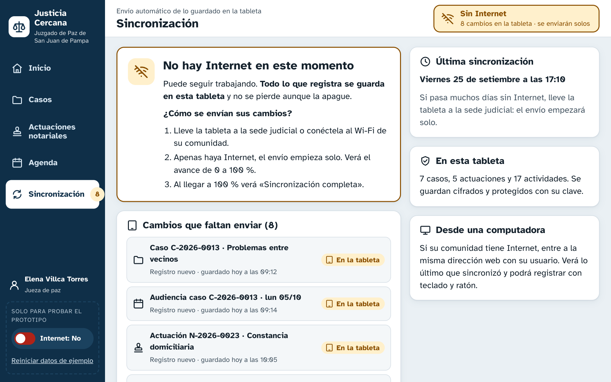
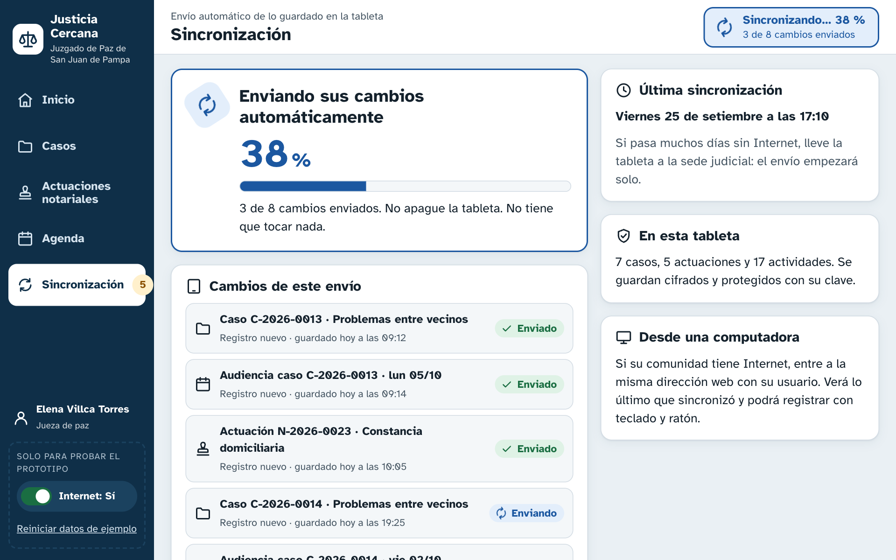
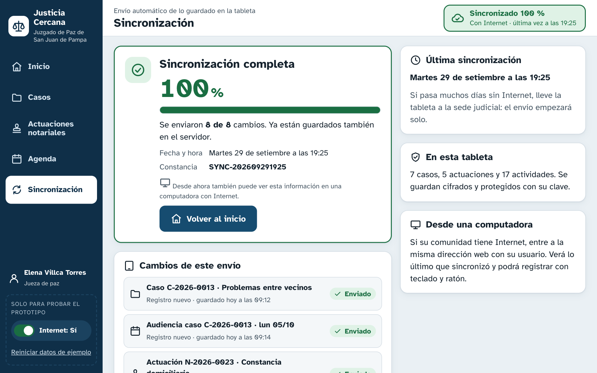
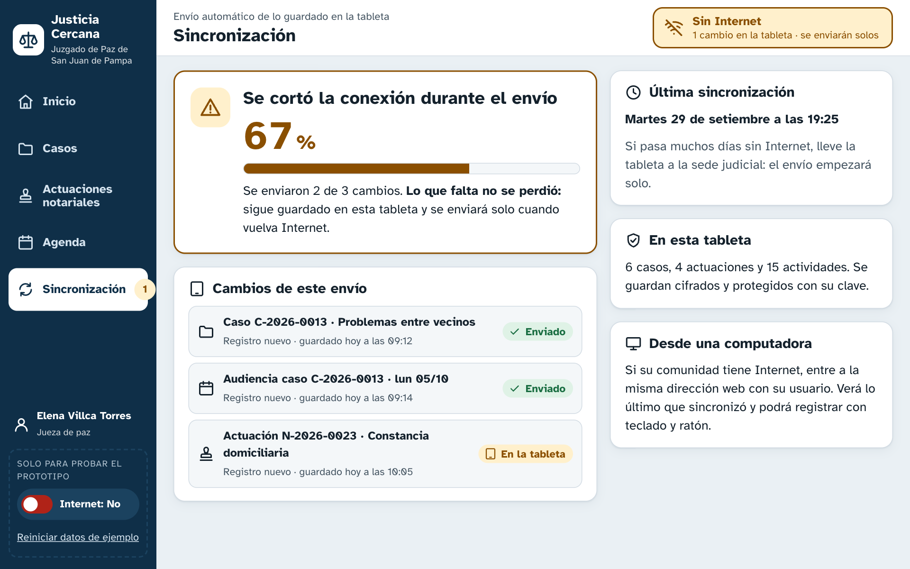

8. Funcionamiento sin conexión y sincronización
8.1 Estados de un registro y cómo se comunican
1 · En la tabletaSe guarda al tocar «Guardar» o mientras se escribe (borrador). Insignia «En la tableta · por enviar».
2 · Por enviarPasa a la cola de cambios. Se cuenta en la barra superior y en el menú («Sincronizar 3»).
3 · EnviandoSolo con Internet y a pedido de la jueza. Muestra «Enviando 3 de 8…» con una barra de progreso.
4 · EnviadoInsignia «Enviado». Pantalla «Sincronización completa» con fecha, hora y constancia. Si falla, vuelve al paso 2 sin perder nada.





| Situación | Mensaje en pantalla |
|---|---|
| Se corta Internet | «Se perdió la conexión a Internet. Puede seguir trabajando: todo se guarda en la tableta.» |
| Guarda sin Internet | «Guardado en esta tableta · se enviará al sincronizar» |
| Hay Internet y pendientes | «Hay conexión a Internet. Tiene 8 cambios… [Sincronizar ahora]» |
| Envío completo | «Sincronización completa · 8 de 8 · constancia SYNC-…» |
| Envío incompleto | «1 no se pudo enviar porque… No se perdió: sigue guardado en esta tableta.» |
8.2 Cómo funciona por dentro
- Aplicación web progresiva (PWA): un service worker guarda la aplicación en la tableta, así que abre sin Internet. En la computadora es la misma dirección web.
- Datos locales en IndexedDB, cifrados y protegidos con la clave de la jueza. Cada cambio entra a una cola de envío con fecha y hora. El prototipo simula esto con el almacenamiento del navegador: los datos sobreviven a recargar la página.
- Códigos sin servidor: cada juzgado tiene su propia serie (C-2026-0014), así que la tableta genera el código sin consultar a nadie. El servidor verifica que no se repita.
- Envío confirmado registro por registro: cada registro tiene un identificador único, por lo que reenviarlo no crea duplicados. Si el mismo registro se editó en la tableta y en la computadora, se conserva el cambio más reciente, el historial guarda ambos y se avisa a la jueza.
| # | Decisión de diseño | Principio · heurística · factor humano | Necesidad que atiende | Cómo facilita o previene errores |
|---|---|---|---|---|
| D28 | Cada registro muestra si está «En la tableta · por enviar» o «Enviado». También hay contadores en el menú, en la barra superior y en Inicio. | H1; Norman: feedback y visibilidad. | Indicar que la información está guardada en la tableta y pendiente de sincronizar (lo pide el caso). | Sabe exactamente qué falta enviar. |
| D29 | Pantalla Sincronizar: sin Internet explica qué hacer y deja el botón desactivado con el motivo escrito; con Internet muestra el progreso y el resultado con constancia; si falla una parte, dice cuál, por qué y permite reintentar. | H1; H9; H10; feedback; error humano: consecuencias mínimas. | Sincronizar y confirmar si el proceso terminó bien (lo pide el caso). | No quedan dudas sobre el envío. Ninguna falla borra los datos de la tableta. |
| D30 | Cuando detecta Internet, ofrece «Sincronizar ahora» en lugar de enviar en segundo plano sin avisar. | H3 Control y libertad; H1. | Decidir cuándo usar los datos móviles o la conexión de la sede. | Sabe con certeza cuándo se envió y evita consumos inesperados. |